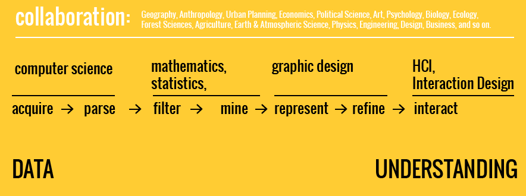
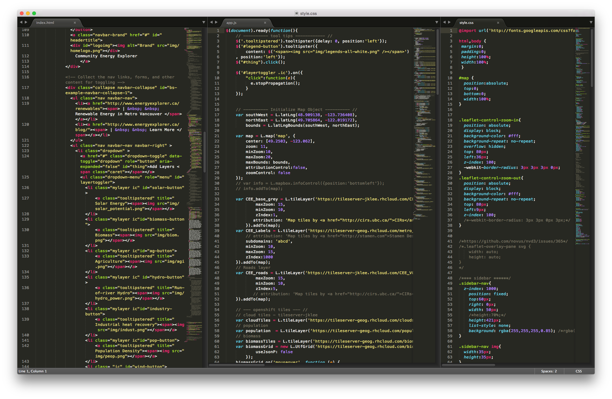
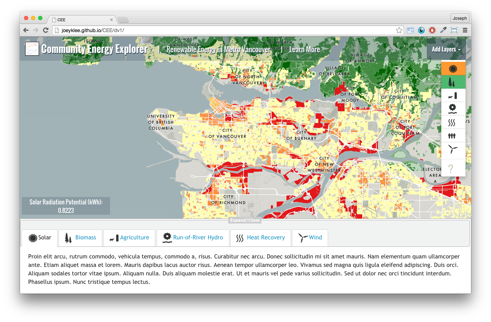

Oh, all the places your data will go!
The slides & links can be found on github:
This talk is relevant for you if:
You do great research and...
- ...are trying to communicate your research.
- ...want to make compelling figures and graphics.
- ...want a way to explore your data visually.
- ...don't know how to reach broader audiences and want to.
- ...are looking for potential collaborations.
What is
Data visualization?
Data Viz as a "thing"...
"...general term that describes any effort to help people understand the significance of data by placing it in a visual context."
Graphical representations of data (numerical or otherwise) rather than textual.
Data Viz as a "process"...

*Key word: collaboration
Ben Fry's Data Viz Pipeline cc/Benedikt Groß
What are the tools?
(or atleast some of the more popular ones)
Do you like to code ?
- D3.js (data driven documents)
- Javascript library for doing all things viz - charts, maps, interaction! The name of the game is "data in, visual properties, out".
- Hands down one of the most successful and powerful viz libraries out there.
- R / R Shiny
- R is a language originally built for statistics, but has become one of the tools of choice for data viz as it is nearly an all-in-one solution to the data viz pipeline. It is a go-to for the New York Times, Code for America, propublica, and others.
- R Shiny is a really lightweight package to make fully functioning web apps in R. Boom.
Do you like to code ? (contd.)
- Python / Pandas (Python data analysis library)
- Powerful data munging, wrangling, and all-around language, but still could use some work in the graphics. Together with the Pandas library, python is a powerful solution to getting your data in the right shape to be visualized.
- Processing
- Processing was built for artists and designers so they could focus more on content rather than heavy handed code. Processing has long been a language of choice for data viz, especially since Ben Fry's Visualizing Data
- Based on Java, but there's also a javascript version and can be run in python!
- Leaflet.js / Mapbox.js & Turf.js
- These javascript based web technologies are (for me) the holy grail for map based visualizations. With the advent of Turf.js, now we can even do our data crunching right in the browser!
More into software?
- Tableau / Tableau Public
- Tableau may be the most user friendly and well established data viz software. With a free, public version, Tableau is making us all make sense of our data with a nice UI + get it out on the web!
- Qlik
- Qlik, similar to Tableau is another data viz software with a UI. Could be worth checking out.
- QGIS
- Qgis is an opensource GIS software that just keeps getting better. With a myriad of handy plugins, easier-to-use UI, map making has never been as accessible.
- Tilemill / Mapbox Studio
- Want to make your own interactive, slippy web maps? Want to show A LOT of data and make it interactive? Here's a fantastic solution.
More into software? (contd.)
- CartoDB
- Make interactive maps for the web with a whole army of customer support, fully functioning backend database, and really nice visual styles for your web mapping needs!
On coding...
Advantages ?
- Customization & freedom
- Data handling and manipulation
- Transparency, Replicability, & Automation
- Most web technologies require some level of coding
- Free!
- (Fun!)
Disadvantages ?
- (steep) Learning curve for beginners
- Dependencies
- Time-intensive
- Setup can be a nightmare!
On software...
Advantages ?
- User friendly
- Large user communities and customer service ;)
- Mellower learning curve
- Can be "handmade"
Disadvantages ?
- Proprietary softwares can be expensive :(
- Dependencies - platform specificities, versioning, setup can be a nightmare!
- Harder to replicate or automate
- Fewer web-based opportunities (but this is changing)
- Can be handmade
What does this look like?
Dustin Cable:
1 dot for every person in the US - a racial dot map.
Periscopic Studio:
Gun deaths and stolen lives.

New York Times:
The economy's twists and turns by inflation and unemployment.

MIT Senseable City Lab:
Cell phone activity during the Obama innauguration.
Alan McConchie,:
Visualization of crowdsourced data for what people call that sweet, bubbly beverage - soda
Population.io:
by (The World Bank) Wolfgang Fengler , K.C. Samir, & Benedikt Groß visualizing and personalizing global modeled demographics from 1900 - 2100. Plus: an API to download these data.
Jer Thorp, Ben Rubin & Mark Hansen:
Elevator Repair service performing the names/titles of the 120,000 objects in MOMA
How to make these things?
- learn to program and/or find software for your needs
- collaborate!
- Both!
What does it look like with code ?

html + Javascript + css
How does this translate?

Map data viewer!
How to start/make collaborations ?
A basic compass for collaborations...
- Data viz requires data
- Data viz people are hungry for new and exciting data. Use your research powers to hook data viz people with your work.
- Look near and far
- You might have expertise close-to-home (e.g. me!) or you might have to reach out. Generally data viz people will have a web presence and 9 out of 10 times would be happy to hear from you!
- You're the expert / Take ownership
- As the researcher, you know the data better than anyone else. The most powerful collaborations form when the viz story is guided by you!
A basic compass for collaborations... (contd)
- To remake, remix, or pioneer?
- Sometimes you might just want to remake the same viz for your own data or other times make something new entirely. This is context specific. In general, throughout the data viz pipeline, the viz will evolve - stay open for progression ;)
- Be aware of the tools
- Different tools have different functions and uses. Web technologies (e.g. html, css, js) are great for getting stuff onto the web + adding interactivity. Others, e.g. Python, could be better for data crunching.
- Know your audience
- Having a vision for where your want your viz to go will inform what tools you use and how much you choose to abstract your data. Data viz can be powerful for anything from grant applications to displaying for public awareness.
A basic compass for collaborations... (contd)
- Data crunching is 90% of the time
- Getting the data into the right format is most of the battle. The viz stuff comes at the end.
- Cost?
- It can vary. Sometimes for free or can get up to >$50.00 an hour depending on the level of professionalism, experience, viz requirements etc. Time is valuable for everyone ;)
- Where can we find data viz people?
- Again this varies, but a lot of data viz people I know come from design (interaction design), media art, computer science, journalism*, geography, and cognitive science.
After all that... why do data viz?
Why?
- Mapping and translation
- Whether it is to explore our data interally or let others look into the work, we want to make data tangible and to report more than facts, but also impressions/feelings.
- Engage broader audience
- Many (most) of us are funded by the public and are working on topics directly relevant to them. Science shouldn't live in the ivory tower.
- Others?
- For the sake of data viz, art, expression, others?
Quick recap
What did we cover?
- What is data viz
- What are the tools - code & softwares
- Advantages and disadvantages of code & software
- What data viz can look like
- Collaboration compass
- Why do it